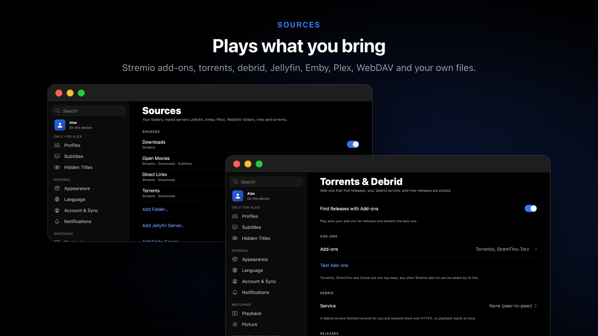
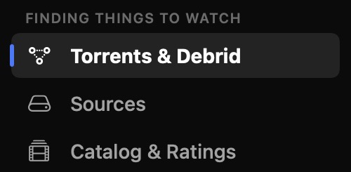
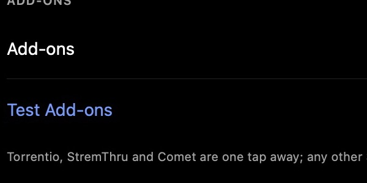
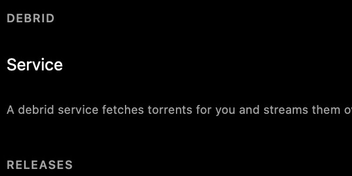
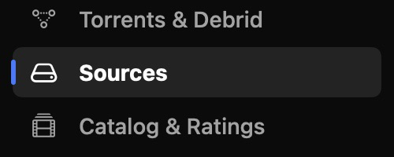
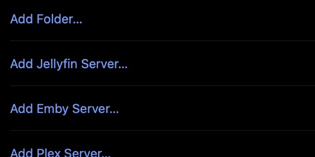
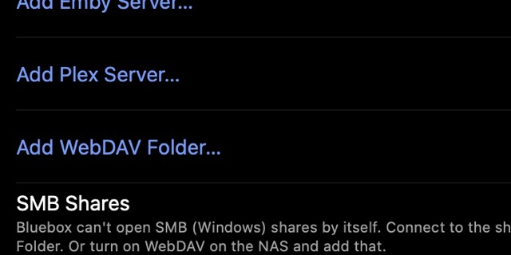
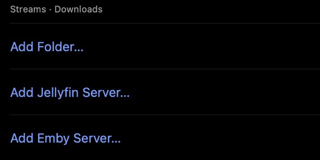
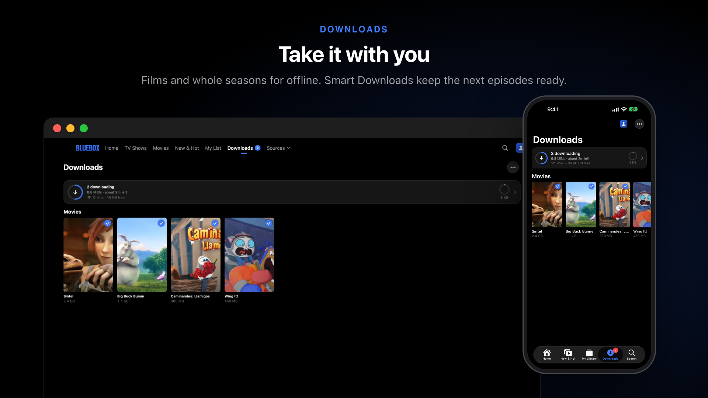
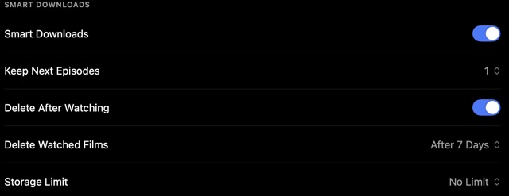

Sources
Bluebox doesn't host anything. It plays from sources you add: add-ons, a debrid service, your own server or your own files.

Start here#
Bluebox already finds things to play: two add-ons (Torrentio and StremThru) are on from the start, and a few free films are there to try. Add what you have:
- A debrid serviceReal-Debrid, Premiumize and others. Streams start at once.
- Your media serverJellyfin, Emby or Plex.
- A folder of filmsOn this device, a drive, or a NAS over WebDAV.
- A linkA video file or stream address.
How Play picks what to play#
- A download on this device, so it works offline.
- Your own sources: your server, WebDAV, folders, your debrid library.
- Your add-ons: the best release this device can play, debrid links first.
To choose yourself, open Releases on a title page (on iPhone, the list icon, or touch and hold an episode).
Technical details · How releases are ranked
Bluebox asks each add-on for releases, then picks cached debrid links first (they start at once), then the healthiest release at your preferred resolution that this device can play. A torrent nobody is sharing falls through to the next release by itself. Releases shows every release with its quality, size, seeders and file type. For a show, Bluebox remembers the release group and resolution you last played and prefers them for the next episode (Settings › Torrents & Debrid › Same Group Next Episode).
Add-ons#
Add-ons find releases for a title. Most Stremio add-ons work.

Open Settings › Torrents & Debrid.
Choose Add-ons.- Tap Add and paste the add-on's link. Comet is one tap.
- Order matters: drag to reorder. When two releases are equally good, the higher add-on wins.
- Test Add-ons says which ones aren't answering.
- Add-on Catalogs on Home shows an add-on's catalogs as rows on Home.
Technical details · Add-on links and keys
Bluebox speaks the Stremio add-on protocol. An add-on's link is its manifest URL, ending in manifest.json. An add-on added by link often has your debrid key in it, so its link is kept in the Keychain. Torrentio and StremThru are on by default; Comet returns debrid links only.
Technical details · Release settings
- Preferred Resolution (1080p by default), Sort By (seeders by default) and Hidden Qualities (CAM rips and screeners are hidden by default and never picked).
- Find Releases Early starts looking as soon as a movie's page opens, so Play starts sooner.
- Add-on Timeout (in Advanced) is how long Bluebox waits for a slow add-on before going on without it.
Debrid services#
A debrid service streams to you from fast servers. Playback starts at once, and other people never see your IP address. Bluebox works with Real-Debrid, Premiumize, AllDebrid, TorBox and Debrid-Link.
- Copy your API key from your service's website. Bluebox shows where.

In Settings › Torrents & Debrid, pick your Service.- Paste the key into Debrid API Key.
Play something. Releases your service already has are marked Cached and picked first.
- Check What's Cached asks your service which releases it has before choosing.
- Debrid Plan shows the days left; Remind Before the Plan Ends warns you three days before.
- Debrid Library (Settings › Sources) lists what's already in your service's cloud.
If it shows an error#
Bluebox says what's wrong and offers to open your account page or pick another release.
| It says | Do this |
|---|---|
| Key not accepted | Copy the key again and paste it. Check the right service is picked. |
| Plan expired | Renew on the service's website. |
| Not ready yet | Your service is still fetching it. Pick a Cached release, or try later. |
| Limit reached | Wait a while, or clear old items on the service's website. |
Technical details · Where your debrid key goes
The key stays in this device's Keychain. It goes to Torrentio, and to StremThru and Comet only with Share Key with Community Add-ons on (turn that on if you use them and nothing shows as Cached). It syncs to your other devices only if you turn on Sync API Keys (What syncs).
Torrents#
Without debrid, add-on torrents stream straight from other people while they download.
- Keep Streams keeps watched streams (5 GB by default) so rewatching doesn't download again. Clear Stream Cache empties it.
- Start Playing After and Buffer at Most trade a quicker start against fewer pauses.
Technical details · How torrents stream
Torrents stream peer to peer with libtorrent. Bluebox tries the best few torrents at once, buffers about a minute of the video, then plays while it downloads the rest in order. Torrents Tried at Once and Maximum Peers are in the same section. Extra Trackers (Advanced) adds trackers to every torrent, which can help a quiet one find peers. Bluebox finds peers through HTTP and UDP trackers and web seeds. It has no DHT, so a magnet link with no trackers can't start.
Your own torrents#
Settings › Sources › Add Torrent takes a magnet link or a .torrent file for something you have the right to watch. Its videos are matched to the catalog and download in order, so you can start at once. Bluebox never searches for torrents itself.
Jellyfin, Emby and Plex#
Jellyfin or Emby#

Open Settings › Sources.
Choose Add Jellyfin Server… (or Emby).- Type the server's address, your username and password.
Your server's films show on Home. Watched and unwatched stay in step with its own apps.
Technical details · Addresses, sign-in and matching
An address looks like https://media.example.com or http://192.168.1.20:8096. Bluebox signs in once and keeps only the server's access token, in the Keychain. Films and episodes are matched by the IDs your server stores, then by name and year. Formats Apple's player can't open are converted by your server. Text subtitles from the server show in the player and in Search Online. Use https:// for any server outside your home network; plain http:// is meant for your own network.
Plex#

Choose Settings › Sources › Add Plex Server….- Tap the sign-in button. plex.tv opens: allow Bluebox there.
- Bluebox finds your server by itself.
Technical details · Adding a Plex server by address
Choose Or Enter the Server and type its address with the port (such as http://192.168.1.20:32400) and your X-Plex-Token. Bluebox keeps only the server's access token.
WebDAV folders#
A folder of videos on a NAS, Nextcloud or any WebDAV server: Settings › Sources › Add WebDAV Folder…, then its address (such as https://nas.example.com/dav/Movies), username and password. Subfolders are included; the password is kept in the Keychain.
SMB (Windows) shares#
Bluebox can't open these by itself. Instead:
- On the MacConnect in Finder with Go › Connect to Server (⌘K), then add the folder with Add Folder….
- On any deviceTurn on WebDAV on the NAS or computer, and add it as a WebDAV folder.
Files and folders#

Choose Settings › Sources › Add Folder….- Pick the folder. Its films are matched to the catalog by name.
- One file on the Mac: File › Open… (⌘O), or drop it on the window.
- Subtitles: put the file next to the video with the language in the name:
Movie.en.srtbesideMovie.mp4. - Wrong title? Right-click (or touch and hold) it and choose Fix Match…. Unmatch and Reset Match are there too.
Technical details · Formats and folders that move
MP4, M4V, MOV, MKV, AVI, WebM, TS, M2TS and MTS files are found. See which player opens which. Bluebox keeps access to a folder across launches. A folder that moves or disappears is kept with an error, so you can point it at the new place instead of losing it.
Direct links#
Settings › Sources › Direct Links › Add Link plays a video by its address: MP4, MOV, M4V or an HLS stream (.m3u8). https:// works anywhere; http:// only on your own network.
Open Movies#
A few free Creative Commons films (from the Blender Foundation and others) are on by default, so there's something to try. Turn them off in Settings › Sources › Open Movies.
Test All Sources in Settings › Sources checks every source and says which can't be reached.
Downloads#
Save films and episodes to watch offline. A download is always played first.

- A filmThe Download button on its page. To pick the release, touch and hold (or right-click) one in Releases.
- A seasonThe ↓ button beside the season picker: Download Season, Unwatched Only, As One Season Pack, Download Rules….
- The queueThe Downloads tab: pause, resume, delete. Also in the Mac's menu bar, and on the iPhone Lock Screen.
Technical details · What can be downloaded
Debrid links, torrents, direct links, Open Movies, WebDAV and media-server files that are already MP4 or MOV. HLS streams can't be downloaded. Simultaneous Downloads is 2 by default (Settings › Downloads).
Smart Downloads#
On by default. For shows you're watching, the next episode is kept downloaded and watched ones are deleted. Watched films go after 7 days.

Technical details · Every Smart Downloads setting
In Settings › Downloads: Keep Next Episodes (1 by default), Delete After Watching, Delete Watched Films (after 7 days), Storage Limit, Download Quality, Largest Episode, Download Audio, Download Window (only at certain hours), Follow Watching on Other Devices (needs sync) and Subtitles With Downloads.
Each show can have its own rules: Download Rules… in the season's ↓ menu. Changing anything there gives the show its own rules; Reset to Settings goes back.
On iPhone and iPad#
- Wi-Fi only by default. Change it in Settings › Mobile Data, which also covers streaming and shows the data used this month.
- Debrid and other downloads keep going after you leave Bluebox.
- Torrents need Bluebox to keep running. With Keep Downloading in the Background on (the default) it stays awake, using more battery. If iOS closes it anyway, torrents carry on next time you open Bluebox.
Catalog, ratings and Trakt#
- Catalog: a free TMDB token (Settings › Catalog & Ratings) adds collections, cast pages and better recommendations. Without one, Bluebox uses Cinemeta. Your lists carry over either way.
- Ratings: an OMDb key adds IMDb, Rotten Tomatoes and Metacritic scores.
Technical details · Trakt
Trakt keeps My List in step with your Trakt watchlist and exchanges watched history both ways; custom lists can sync too (off by default), and it follows the first profile. Trakt needs a Trakt app's Client ID built into Bluebox, which the released builds don't include. To use it, build Bluebox yourself with TRAKT_CLIENT_ID and TRAKT_CLIENT_SECRET in Config/Secrets.xcconfig (from a new app at trakt.tv › Settings › Your API Apps), and Settings › Account & Sync then shows Connect Trakt.